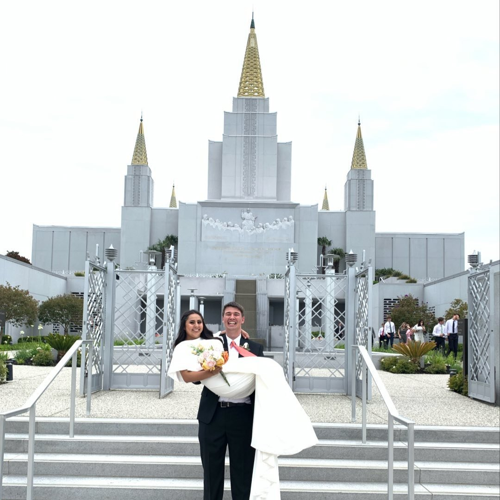

What I have done so far!
About Me
- I served a mission for the Church of Jesus Christ of Latter Day Saints!
- I served in Goiania Brasil from Jan 2020- March 2020 due to COVID-19.
- I was sent home from the end of March 2020 until I was reassigned to St. Louis Missouri in May 2020.
- I served in St. Louis Missouri from May 2020 until February 2021.
- I returned to Brasil in February 2021 and served there until finishing my mission in December 2021.
- I enjoy playing volleyball!
- I played volleyball in middle school and all four years of high school.
- I played the opposite and outside hitter position during these years.
- Throughout my volleyball career, my teams and I had won around 8 tournaments.
- I am married to my high school sweetheart Karen!
- We met in 2017 at a Youth Conference for our stake.
- After dancing with each other at multiple quad stake dances we began to like each other.
- We began officially dating after we graduated in 2019.
- After doing a semester of BYU together, we both went on missions.
- 6 months after getting back from our missions, we were sealed in the Oakland California temple.
This is a picture from my wedding

I was one of these missionaries who was displaced due to COVID-19
Movie Tableau
Return to Top of Page